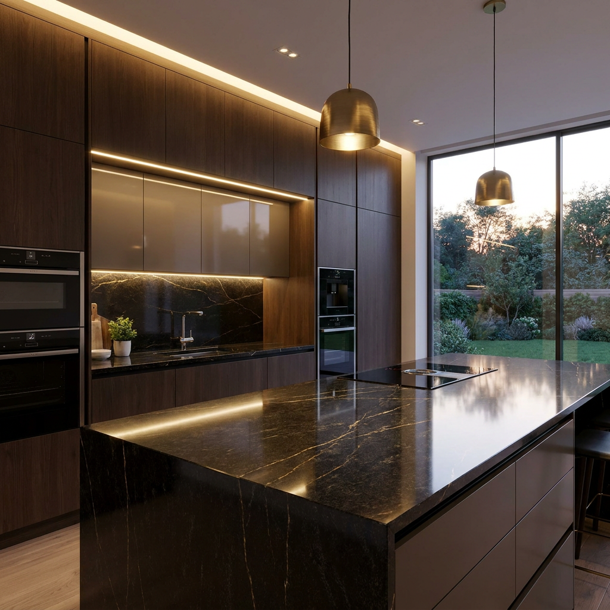
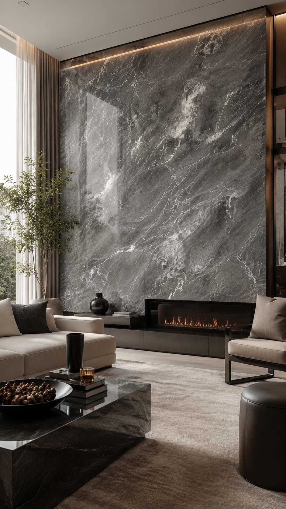

Inspirasi, tips, dan wawasan seputar dunia batu alam premium untuk mendukung kesuksesan proyek Anda.

Tips & Panduan
Temukan rahasia memilih marmer berkualitas tinggi yang tepat untuk menciptakan lantai rumah mewah yang elegan dan tahan lama.

Interior
Mengapa granit tetap menjadi standar emas untuk meja dapur? Simak 5 keunggulan utamanya untuk dapur modern Anda.

Tren Desain
Eksplorasi penggunaan exotic stone dengan corak dramatis yang mendominasi tren interior kelas atas tahun ini.
Edukasi
Ketahui perbedaan karakteristik, daya tahan, dan estetika antara marmer dan granit sebelum mengambil keputusan untuk proyek Anda.
Perawatan
Panduan praktis menjaga kilau lantai marmer agar tidak kusam, tahan lama, dan selalu terlihat seperti baru.
Inspirasi
Ciptakan suasana spa eksklusif di rumah sendiri dengan mengaplikasikan batu alam pilihan pada dinding dan lantai kamar mandi.
Desain
Pelajari teknik instalasi bookmatch yang mampu mengubah dinding ruangan menjadi karya seni simetris dari alam.
Tips & Panduan
Alasan mengapa inspeksi visual langsung di gudang sangat penting sebelum memutuskan pembelian material untuk proyek Anda.
Manajemen Proyek
Jangan salah pilih! Pahami kriteria supplier batu alam profesional yang mampu menjamin ketersediaan dan kualitas material.
Edukasi
Setiap finishing memiliki karakter tersendiri. Mana yang paling sesuai untuk lantai, dinding, atau area basah? Temukan jawabannya di sini.